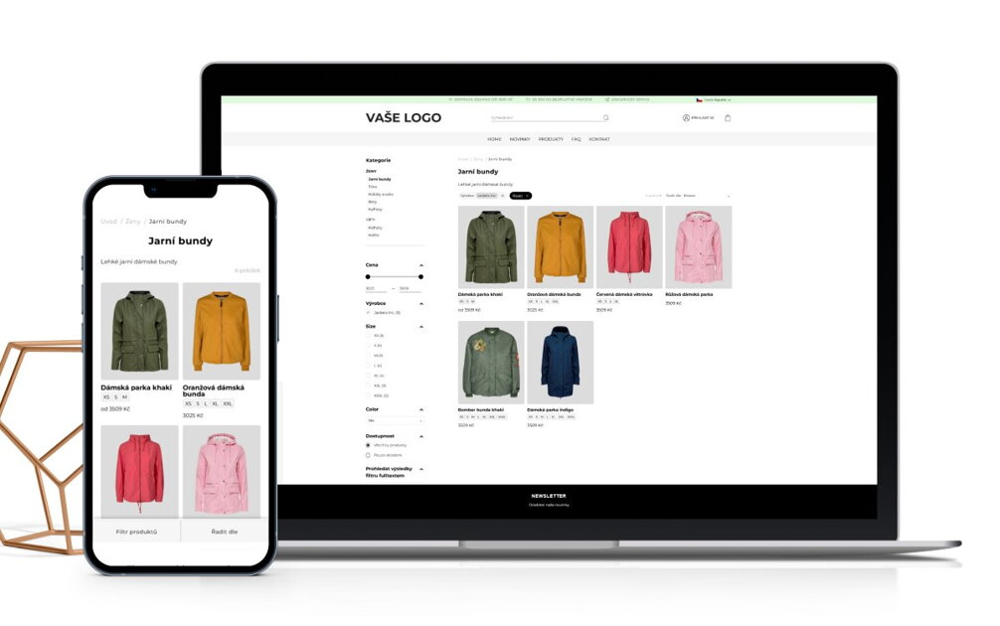

E-shop, inak aj internetový obchod, predstavuje obchod na internete. Jeho protipólom je kamenný obchod, teda fyzická prevádzka, kde dochádza k predaju produktov alebo služieb. Najväčšou výhodou e-shopu sú nižšie náklady, a tým pádom aj nižšie ceny. Nevýhodou sú najmä problémy spojené s bezpečnosťou nákupu – predovšetkým ochranou osobných údajov.E-shop v najjednoduchšej podobe predstavuje kategorizovaný katalóg produktov, ktorý je doplnený nákupným procesom. V ňom môže zákazník jednotlivé produkty alebo služby pridať do nákupného košíka, vytvoriť objednávku a zaplatiť ju. Hoci sa v minulosti tešila popularite najmä platba pomocou dobierky, v súčasnosti je najpopulárnejšia platba prevodom a platba kartou.E-shopy sú často využívané na predaj rôzneho typu tovaru, ako napríklad kníh, elektroniky, módy alebo potravín. Zákazníci môžu v e-shope vyhľadávať a porovnávať produkty, objednávať a platiť ich online a zároveň si ich nechať následne doručiť na svoju adresu. Eshopy sú jedným z najrýchlejšie sa rozvíjajúcich typov obchodu a stávajú sa pre mnohých ľudí jednoduchšou a pohodlnejšou alternatívou k tradičnému nákupu v kamenných obchodoch.

E-shop je dostupný 24 hodín denne, 7 dní v týždni, takže zákazníci si môžu nakupovať kedykoľvek a odkiaľkoľvek.
E-shop vám umožňuje osloviť oveľa širšie publikum, než by ste mohli s kamennou predajňou.
E-shopy sú spravidla lacnejšie na prevádzku ako kamenné predajne, pretože nepotrebujú fyzický priestor a personál.
Moderné platformy pre e-shopy ponúkajú intuitívne nástroje na správu produktov, objednávok a zákazníkov.
E-shopy, ktoré predávajú produkty priamo spotrebiteľom.
E-shopy, ktoré predávajú produkty a služby iným firmám.
Online platformy, ktoré umožňujú jednotlivcom predávať produkty a služby ostatným jednotlivcom.
Najvyhľadávanejšími a najobľúbenejšími e-shopmi na Slovensku sú Alza.sk (elektronika), Notino.sk (kozmetika) a Lidl.sk (zmiešaný tovar). Tieto platformy dlhodobo dominujú rebríčkom návštevnosti aj spotrebiteľským anketám vďaka spoľahlivosti a širokej ponuke.
Celosvetovému rebríčku návštevnosti (mesačne) kraľujú nasledovní giganti: